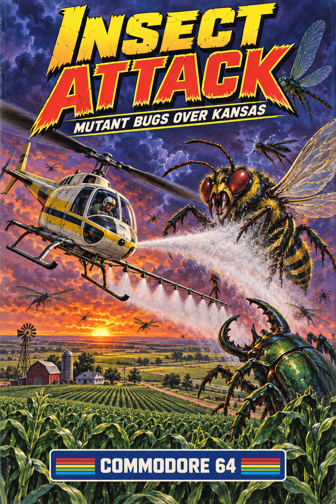

RECOVERED FROM THE ORIGINAL NOTEBOOKS
Michael King's C64 game projects
Four handwritten ideas, ready to explore. Choose a disk to load a game or read its story.
DISK LIBRARY01—04
Click or tap a disk to select it. Use the arrows to browse.
DISK 01 / ARCADE
INSECT ATTACK
Defend Kansas farmland from enormous mutated insects in a crop-spraying helicopter.
01 / 04

01 / ARCADE
INSECT ATTACK
Defend Kansas farmland from enormous mutated insects in a crop-spraying helicopter.
OPEN THIS GAME'S OWN PAGE ↗